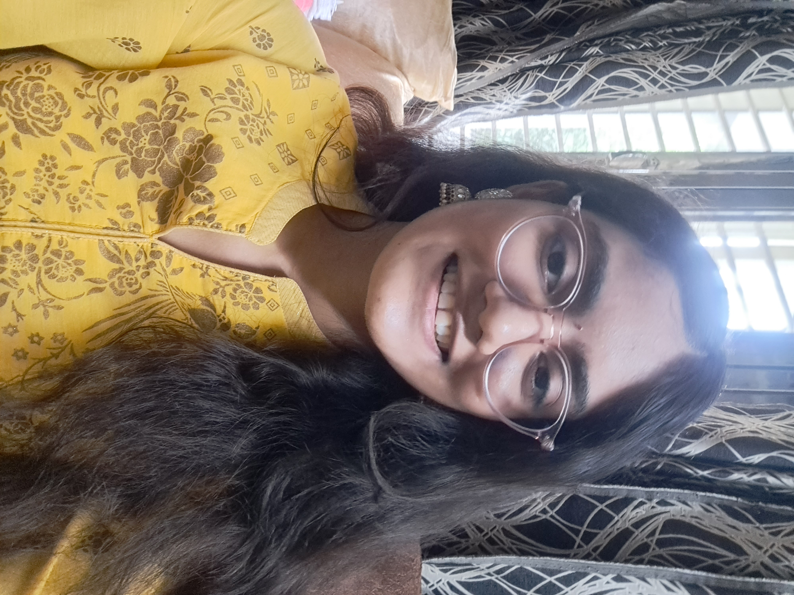

Anika Prajapati

Summary
I'm a passionate computer science student with a strong interest in software development. My focus is on Java and Python programming languages, and I'm always eager to learn and explore new technologies.
🌱 I’m currently learning ... Deepening my understanding of algorithms and data structures. Exploring web development using frameworks like Spring Boot (Java) and Django (Python). Diving into machine learning and artificial intelligence with Python libraries like TensorFlow and scikit-learn.
Education
- Apr 2021- Jul 2025
- Bachelor's of Technology, Computer science Engineering, Dr.A.P.J Abdul Kalam Technical University
- Apr 2020- Mar 2021
- 12th, The millennium School meerut
- Percentage- 93.4
- Apr 2018- Mar 2019
- 10th, The millennium School meerut
- Percentage- 86.8
Skills
- Java
- Python Programming
- HTML, CSS, Java Script
- Data Structures
- Microsoft Powerpointt
- Generative AI
- Threat Detection
- Cyber Security
Awards & Certificates
- Introduction to Java, Coding Ninjas
- Data Structures in java, Coding Ninjas
- Honeywell Cybersecurity Training
- Introduction to Cybersecurity, Cisco Networking Academy
Internships
- Virtual Internship Program in Generative AI, ICT Academy and Open Weaver
- Learned the Basics of Generative AI, the concepts of speech recognition (Speech to text generation) and the concept of Image Generation using Generative AI in my Virtual internship program. I successfully completed my coding projects.
Other